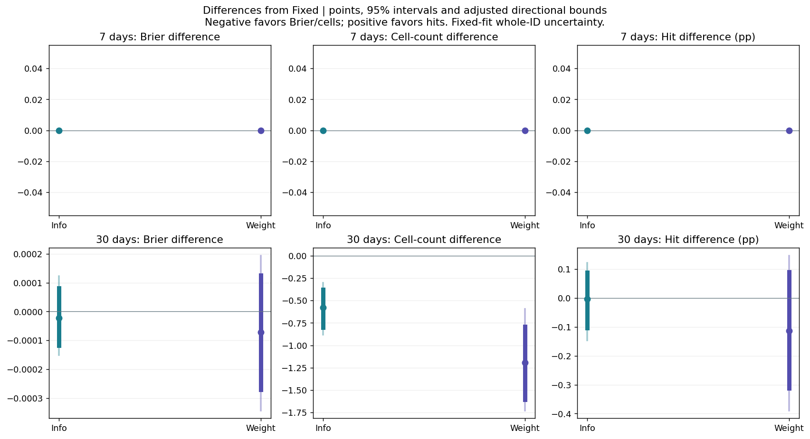
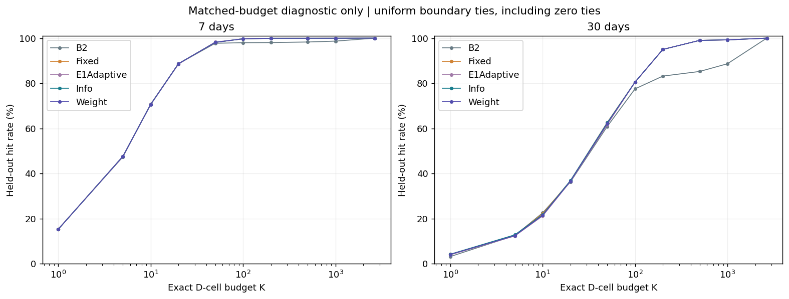
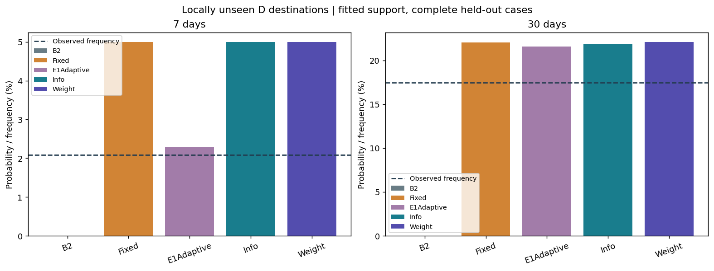
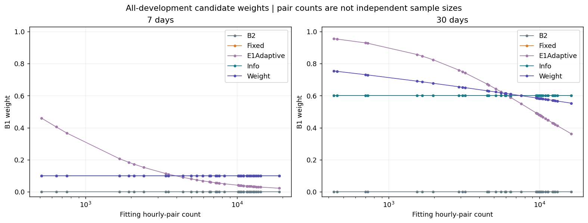
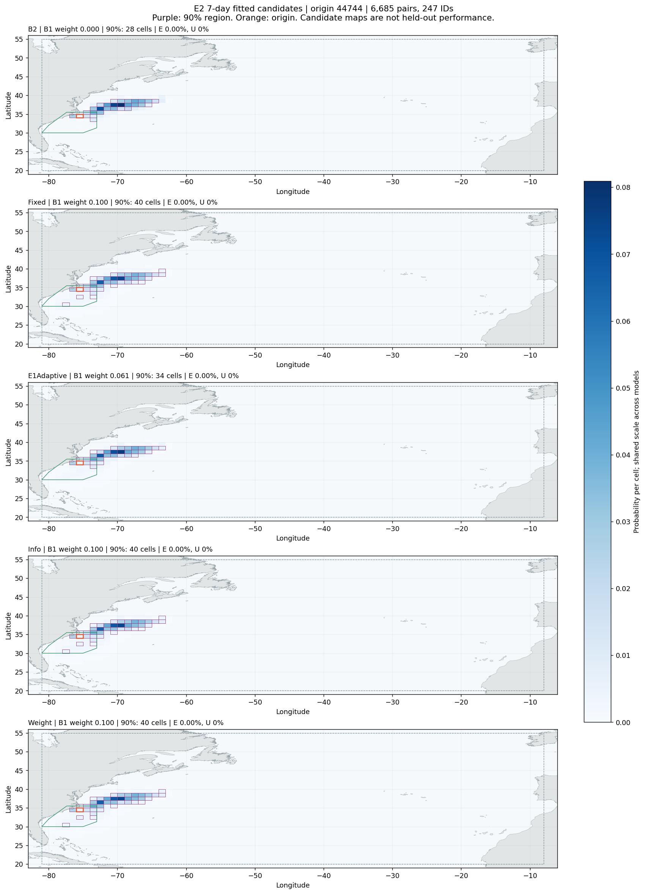
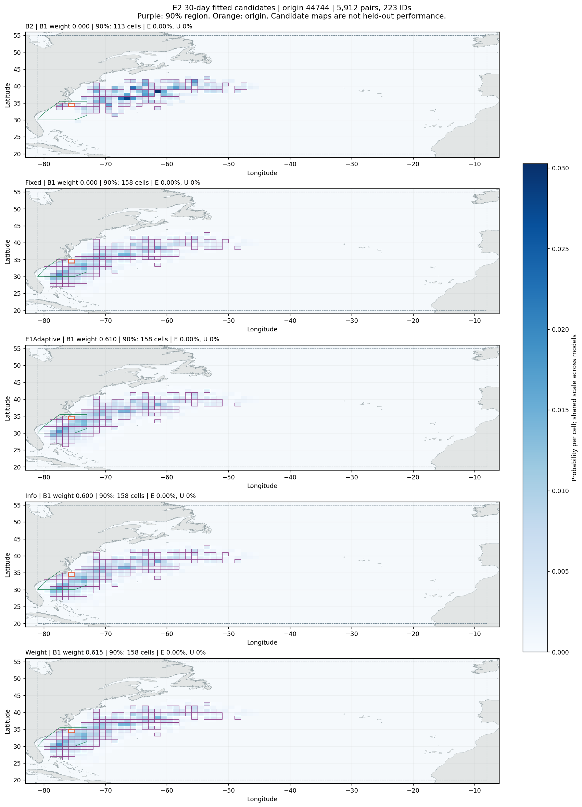

b2_b1_e2_20261030T060621_291294Z · Development results · Review pending
7 days, Info versus Fixed: no_change; Brier +0.00000000, 90% cells +0.000, actual hits +0.000 percentage points.
7 days, Weight versus Fixed: no_change; Brier +0.00000000, 90% cells +0.000, actual hits +0.000 percentage points.
30 days, Info versus Fixed: no_improvement_or_tradeoff; Brier -0.00002200, 90% cells -0.579, actual hits -0.004 percentage points.
30 days, Weight versus Fixed: no_improvement_or_tradeoff; Brier -0.00007188, 90% cells -1.193, actual hits -0.114 percentage points.
| horizon_days | model | evaluable_pairs | evaluable_ids | brier | region90_cells | unsupported_pairs | region90_hit_percent |
|---|---|---|---|---|---|---|---|
| 7 | B2 | 303288 | 385 | 0.929001 | 18.225812 | 0 | 87.439002 |
| 7 | E1Adaptive | 303288 | 385 | 0.928765 | 20.942530 | 0 | 89.793859 |
| 7 | Fixed | 303288 | 385 | 0.928607 | 25.643751 | 0 | 93.291195 |
| 7 | Info | 303288 | 385 | 0.928607 | 25.643751 | 0 | 93.291195 |
| 7 | Weight | 303288 | 385 | 0.928607 | 25.643751 | 0 | 93.291195 |
| 30 | B2 | 268998 | 337 | 0.994751 | 62.608321 | 0 | 66.372612 |
| 30 | E1Adaptive | 268998 | 337 | 0.988806 | 122.186247 | 0 | 85.842646 |
| 30 | Fixed | 268998 | 337 | 0.988819 | 126.406014 | 0 | 86.428524 |
| 30 | Info | 268998 | 337 | 0.988797 | 125.826683 | 0 | 86.424063 |
| 30 | Weight | 268998 | 337 | 0.988747 | 125.212990 | 0 | 86.314025 |
| horizon_days | model | reference | metric | difference | lower_95 | upper_95 | adjusted_lower | adjusted_upper | defined_replicates | undefined_replicates |
|---|---|---|---|---|---|---|---|---|---|---|
| 7 | Info | Fixed | brier | 0.000000 | 0.000000 | 0.000000 | 0.000000 | 0.000000 | 5000 | 0 |
| 7 | Info | Fixed | region90_cells | 0.000000 | 0.000000 | 0.000000 | 0.000000 | 0.000000 | 5000 | 0 |
| 7 | Info | Fixed | region90_hit | 0.000000 | 0.000000 | 0.000000 | 0.000000 | 0.000000 | 5000 | 0 |
| 7 | Weight | Fixed | brier | 0.000000 | 0.000000 | 0.000000 | 0.000000 | 0.000000 | 5000 | 0 |
| 7 | Weight | Fixed | region90_cells | 0.000000 | 0.000000 | 0.000000 | 0.000000 | 0.000000 | 5000 | 0 |
| 7 | Weight | Fixed | region90_hit | 0.000000 | 0.000000 | 0.000000 | 0.000000 | 0.000000 | 5000 | 0 |
| 30 | Info | Fixed | brier | -0.000022 | -0.000118 | 0.000081 | -0.000151 | 0.000123 | 5000 | 0 |
| 30 | Info | Fixed | region90_cells | -0.579331 | -0.801476 | -0.377311 | -0.879060 | -0.303292 | 5000 | 0 |
| 30 | Info | Fixed | region90_hit | -0.000045 | -0.001039 | 0.000874 | -0.001463 | 0.001200 | 5000 | 0 |
| 30 | Weight | Fixed | brier | -0.000072 | -0.000271 | 0.000126 | -0.000343 | 0.000194 | 5000 | 0 |
| 30 | Weight | Fixed | region90_cells | -1.193024 | -1.606671 | -0.790624 | -1.727881 | -0.595461 | 5000 | 0 |
| 30 | Weight | Fixed | region90_hit | -0.001145 | -0.003127 | 0.000888 | -0.003894 | 0.001457 | 5000 | 0 |
Hit differences above are fractions, not percentage points.





